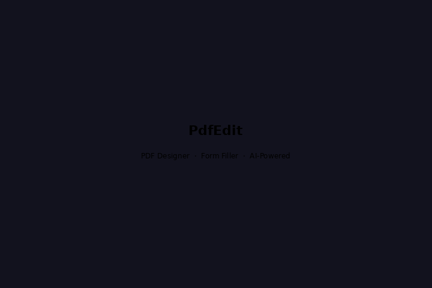
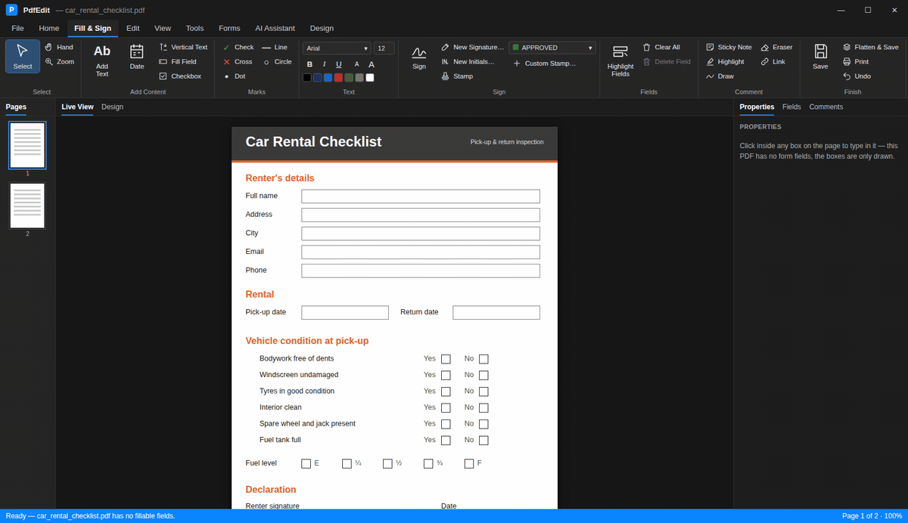
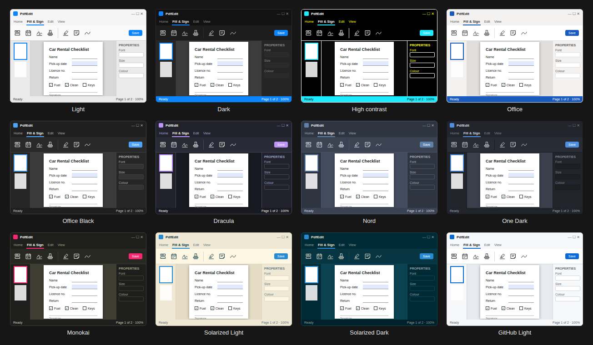
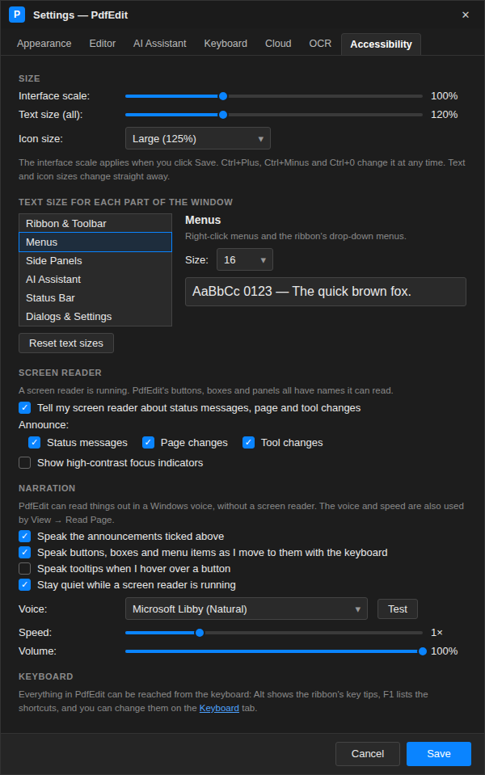

User guide > Getting started
Everything PdfEdit does

Everything below is free and included. There's no account, no watermark and no daily limit, and your files never leave your PC unless you choose to use the cloud or the AI assistant.
What's new#
- PdfEdit for Mac and Linux (new in 1.4; Linux from 1.4.2): the web version in its own desktop window, built with Avalonia, as disk images for Apple silicon and Intel Macs and as an AppImage for Linux. It works offline from the web, keeps your files on your computer, saves with the system's Save dialog, opens PDFs from Finder or your file manager, and checks for updates.
- Templates: start from one of 70 templates (invoices, quotes, receipts, fillable forms and applications, agreements, letters, resumes, flyers and menus, certificates and cards, worksheets, planners, calendars and budgets) in a gallery with search, categories and a preview, like Office's. Customise it on the Design canvas or open it straight away as a fillable PDF. File > New from Template on Windows, File > New on the web.
- Quick wins: open a PDF from a web link (both apps); a signature from a photo with the paper removed (both); the form's progress in the status bar with a jump to the next empty field (both); several PDFs dropped at once each open in a tab (both); the screen stays on while reading aloud, auto-scrolling or presenting (both); the taskbar button flashes (Windows) or the tab title flashes and a notification shows (web) when a long job finishes while you're elsewhere. The web version also installs as an app and opens PDFs from Open with, continues on your phone with a QR code, reopens documents where you left them, writes stamp dates in your own format and can reduce motion.
- Share, dictate and stamp where you are (web): Share sends the PDF through your phone's or computer's share sheet; Dictate types what you say into fields and notes; dynamic stamps can add your location.
- Drafts on the web: your work is kept in the browser as you go: open documents, things placed on them but not applied yet, typed field values and the Design canvas. A reload, a dropped connection or a server restart brings everything back. Save Draft keeps it straight away, and drafts from a closed window wait on the start page.
- Web version catches up: added text, stamps, marks, drawings and highlights stay editable after saving; a floating toolbar and right-click menus; Properties and Lock for the selected item; a Comments panel with review status, checkmarks, notes and replies; thumbnail rotate, delete, menu and drag to reorder; All tools docked on the left; recent files; editing the PDF's own links; dates that change format in place.
- Edit images: select any picture already in a PDF to move it, resize it, replace it with another, save it, copy it or delete it.
- Snapshot: drag a box round any area of a page and copy it or save it as a picture.
- Resize pages: change the paper size (A4, Letter, Legal, A3, A5 or your own) or add a margin. Content is scaled to fit, and form fields, links and comments move with it.
- Pages per sheet and booklets: print 2, 4, 6, 9 or 16 pages on a sheet, or make a booklet to print double-sided, fold and staple.
- Convert to greyscale: text, drawings and pictures in shades of grey, with the text still selectable.
- More formats: open text, Markdown and HTML files as PDFs; save a PDF as a web page, Markdown or an ePub e-book.
- Stamps you manage yourself: create, edit and delete your own stamps in any colour, choose the default, or use one as a page background like CONFIDENTIAL or DRAFT.
- Squiggly underline alongside highlight, underline and strikethrough.
- Auto-scroll for hands-free reading, with adjustable speed.
- Accessibility and preferences: a high-contrast focus ring, reduced motion, how long notifications and tooltips stay, single-letter tool keys on or off, the tour and tips read aloud, and back up, restore or reset all your preferences.
- A friendlier tour: larger, with Next, Back and Close buttons and a read-aloud button.
Fill & sign#
- Type into any form, even a flat PDF or a scan with no fields.
- Add ticks, crosses, dates, stamps and your signature or initials.
- Sign with a certificate (a Digital ID) and check other people's signatures.
- Bulk fill: one filled copy of a form for every row of a spreadsheet.
Forms#
- Create text boxes, check boxes, radio buttons, drop-downs, list boxes, date and signature fields by hand, or let Detect Fields find them.
- Number formats, required fields, and totals that add themselves up.
- Import and export form data; flatten a filled form.
- Turn Word documents into fillable PDF forms.
Review and markup#
- Highlight, underline, squiggly underline and strikethrough.
- Sticky notes, text boxes, callouts, drawing, shapes, arrows, clouds and measurements.
- Stamps: Acrobat's Standard Business, Sign Here and Dynamic sets (which add your name and the time), plus your own. Pick the default from the Stamps window, which previews every stamp.
- Links to web pages, email, phone numbers or other pages.
- Redact text for good, compare two versions side by side or visually, and keep track of comments in the Comments list.
Pages#
- Rotate, reorder, insert, duplicate, extract, delete, merge and split pages.
- Resize pages to another paper size or add a margin, for all pages, the current page or a range.
- Crop, watermark (behind or on top of the page), header and footer, page numbers and Bates numbers.
- Convert the whole document to greyscale.
- Password-protect, remove hidden information, and make PDF/A for archiving.
Pictures#
- Edit Images: move, resize (keeping proportions, or Shift for free), replace, save, copy or delete the pictures in a PDF. Every change can be undone with Ctrl+Z.
- Snapshot any area of a page as a sharp PNG, to copy or save.
- Extract every picture in a PDF to a folder, or save pages as images.
Printing#
- Print, or make a new PDF with 2, 4, 6, 9 or 16 pages per sheet, with optional borders.
- Booklets: pages arranged so they read in order once printed double-sided (flipping on the short edge), folded and stapled.
Import and export#
- Open Word files (with or without Office), Excel, PowerPoint, Google Docs links, text, Markdown and HTML as PDFs.
- Create a PDF from images, a blank page or the Design canvas.
- Save as Word, Excel, PowerPoint, plain text, HTML, Markdown, ePub, PNG or JPEG images, PDF/A, form data or comments (XFDF).
Scan and OCR#
- Scan from a flatbed or feeder (TWAIN or WIA) straight to a PDF.
- Recognise text so scanned pages can be searched and copied, and clean up scans.
Cloud and automation#
- Import from and save to Google Drive or OneDrive with your own app details.
- Batch-process a folder: OCR, compress, watermark, flatten, number or protect many files at once.
- Search every PDF in a folder and its subfolders.
Reading#
- Night mode, two-page view and slide show.
- Read a page or the whole document aloud in a Windows voice.
- Auto-scroll: the page moves by itself and turns at the bottom. Up and Down change the speed; Esc, Space or a click stops it.
Themes#
- Follows your Windows light, dark or contrast theme, or pick Office, Dracula, Nord, One Dark, Monokai, Solarized, GitHub Light and more.
Accessibility and preferences#
- Interface scale, text size for every part of the window, and icon size.
- Screen reader announcements for status messages, page changes and tool changes.
- A built-in voice that can read out announcements, the control you move to, tooltips, the guided tour and Tip of the Day.
- A thick yellow-and-black focus ring so you can always see where the keyboard is.
- Reduce motion (also follows Windows' animation setting), how long notifications stay on screen, and how quickly tooltips appear.
- Turn single-letter tool keys off if you navigate with a screen reader's letter keys.
- Back up your preferences to a file, restore them on another PC, or reset them. API keys, sign-ins and recent files are never included.
Optional AI#
- Ask about the document or any passage, summarise, explain, rewrite or translate it, or get an outline or mind map.
- Translate a whole PDF keeping its layout, ask across several PDFs, analyse a contract or extract key data.
- Let it fill fields, highlight text or run commands; you approve each change.
- Use your own Claude or OpenAI key, or a free local model.

 |
 |
| Themes: follows Windows, or pick your own | Accessibility: sizes, screen reader and narration |
See the documentation for how each one works, and screenshots of every tool.